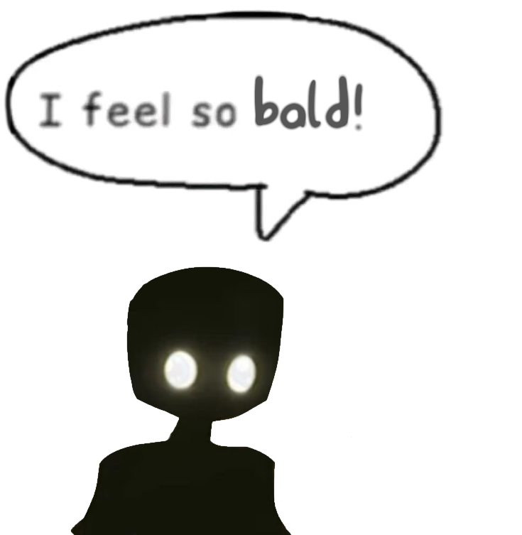

Kadush Website 4.0
Hi!
Hello i am TheCodaze and welcome to my Neocities site!Stuff about me
I am a very big fan of Murder Drones and the Sonic series. I also like screwing around withrandom tech stuff like modding Nintendo 3DS's (extremely easy to do btw) and installing Gentoo.
I also like to draw from time to time and play games on PC and on Xbox 360.
You might also find me upload a YouTube video once a year!
Why 4
Because i just cant keep myself to use one concept for some reason.I wasnt really satisfied with the last site since it just looked too boring for my eyes.
(Im yet to add a dark mode that would work and look good.)
Socials
I use these social media below! If you find an account under my name that isn't listed here,it might be a private account or not my account at all.
If you want to message me please do it through my Twitter or preferably my BlueSky account.
BlueSky --- Twitter --- YouTube --- Steam --- BitView --- GitHub --- E-Mail